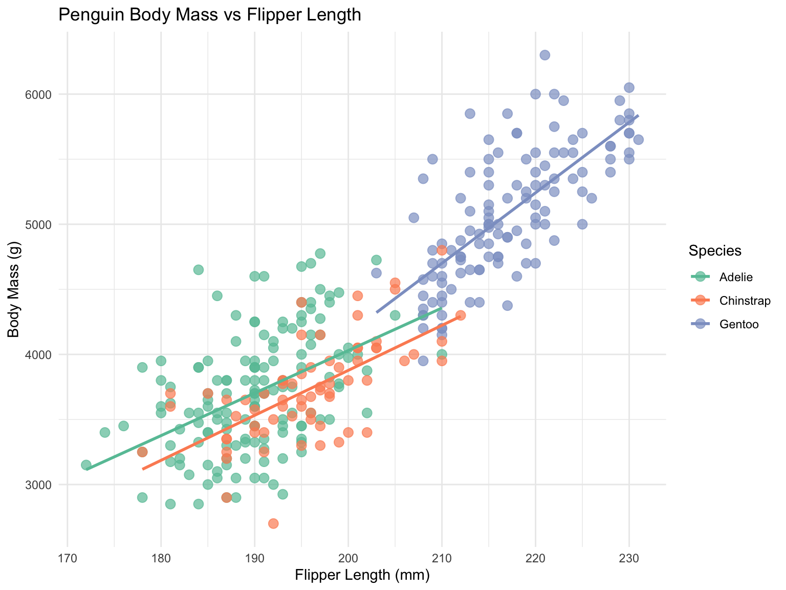
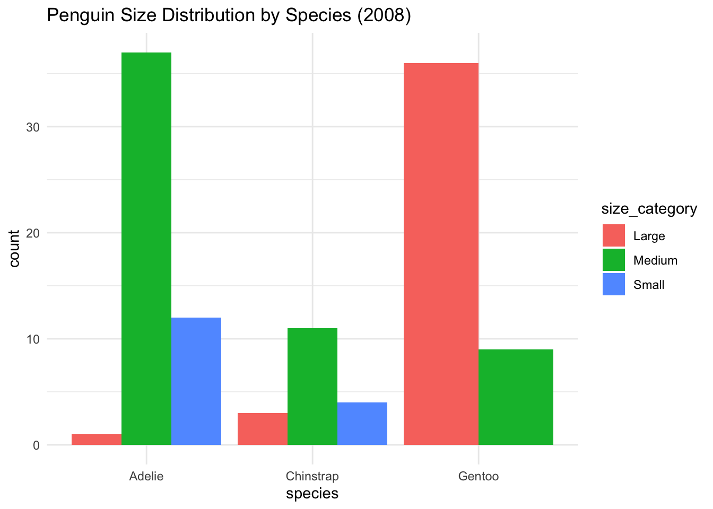

# Install tidyverse if you haven't already
# install.packages("tidyverse")
# Load the tidyverse
library(tidyverse)Chapter 1: Introduction to R and the Tidyverse Ecosystem
Learning Objectives
By the end of this chapter, you will:
- Understand the philosophy and principles of the tidyverse
- Know the core tidyverse packages and their purposes
- Be able to install and load tidyverse packages
- Understand the pipe operator (
%>%and|>) - Work with tibbles, the tidyverse’s modern data frames
- Understand tidy data principles
Download R Script
You can download the complete R code for this chapter: 📥 Download 01-introduction.R
What is the Tidyverse?
The tidyverse is a collection of R packages designed for data science. All packages share an underlying design philosophy, grammar, and data structures. The tidyverse makes data manipulation, exploration, and visualization faster and more intuitive.
Core Tidyverse Packages
The tidyverse includes these core packages:
- ggplot2: Data visualization
- dplyr: Data manipulation
- tidyr: Data tidying
- readr: Data import
- purrr: Functional programming
- tibble: Modern data frames
- stringr: String manipulation
- forcats: Factor handling
The Pipe Operator
The pipe operator is fundamental to tidyverse workflows. It allows you to chain operations together in a readable way.
Understanding the Problem with Nested Functions
In traditional R programming, when you need to apply multiple functions to data, you end up with deeply nested function calls that are read from the inside out. This creates several problems:
- Readability: The order of operations is reversed from how we naturally think about them
- Debugging: It’s hard to inspect intermediate results
- Modification: Adding or removing steps requires careful parenthesis management
Traditional R vs Piped Approach
Let’s look at a simple example where we want to: 1. Take a vector of numbers 2. Calculate the square root of each 3. Find the mean 4. Round to 2 decimal places
# Traditional nested approach (hard to read)
# We read this from inside-out: first sqrt, then mean, then round
# But we write it outside-in!
round(mean(sqrt(c(1, 4, 9, 16, 25))), 2)[1] 3# With pipes (much clearer!)
# We read AND write this in the order operations happen
c(1, 4, 9, 16, 25) %>%
sqrt() %>% # First: take square root
mean() %>% # Then: calculate mean
round(2) # Finally: round to 2 decimals[1] 3# Using the native R pipe (R 4.1+)
# The |> operator is built into base R as of version 4.1
# It works similarly to %>% but with some subtle differences
c(1, 4, 9, 16, 25) |>
sqrt() |>
mean() |>
round(2)[1] 3Notice how the piped version reads like a recipe: “Take these numbers, THEN calculate square root, THEN find the mean, THEN round.” This matches our mental model of the data transformation process.
How the Pipe Actually Works
The pipe operator takes the output of the expression on its left and passes it as the first argument to the function on its right. So x %>% f() is equivalent to f(x), and x %>% f() %>% g() is equivalent to g(f(x)).
You can also use the . placeholder to specify where the piped value should go if it’s not the first argument:
# Using the dot placeholder for custom positioning
10 %>%
`/`(2) %>% # 10 / 2 = 5
`+`(3) %>% # 5 + 3 = 8
`^`(2) # 8^2 = 64[1] 64# When the piped value isn't the first argument
5 %>%
seq(from = 1, to = .) # Creates sequence from 1 to 5[1] 1 2 3 4 5# More practical example with data
mtcars %>%
lm(mpg ~ cyl + wt, data = .) # data = . puts the piped data in the right place
Call:
lm(formula = mpg ~ cyl + wt, data = .)
Coefficients:
(Intercept) cyl wt
39.686 -1.508 -3.191 Practical Example with Data
# Load a built-in dataset
data(mtcars)
# Without pipes - nested and hard to read
head(arrange(filter(mtcars, cyl == 6), desc(mpg)), 5) mpg cyl disp hp drat wt qsec vs am gear carb
Hornet 4 Drive 21.4 6 258.0 110 3.08 3.215 19.44 1 0 3 1
Mazda RX4 21.0 6 160.0 110 3.90 2.620 16.46 0 1 4 4
Mazda RX4 Wag 21.0 6 160.0 110 3.90 2.875 17.02 0 1 4 4
Ferrari Dino 19.7 6 145.0 175 3.62 2.770 15.50 0 1 5 6
Merc 280 19.2 6 167.6 123 3.92 3.440 18.30 1 0 4 4# With pipes - clear and sequential
mtcars %>%
filter(cyl == 6) %>%
arrange(desc(mpg)) %>%
head(5) mpg cyl disp hp drat wt qsec vs am gear carb
Hornet 4 Drive 21.4 6 258.0 110 3.08 3.215 19.44 1 0 3 1
Mazda RX4 21.0 6 160.0 110 3.90 2.620 16.46 0 1 4 4
Mazda RX4 Wag 21.0 6 160.0 110 3.90 2.875 17.02 0 1 4 4
Ferrari Dino 19.7 6 145.0 175 3.62 2.770 15.50 0 1 5 6
Merc 280 19.2 6 167.6 123 3.92 3.440 18.30 1 0 4 4Tibbles: Modern Data Frames
Tibbles are the tidyverse’s enhanced version of data frames.
Creating Tibbles
# Create a tibble from scratch
my_tibble <- tibble(
name = c("Alice", "Bob", "Charlie", "Diana"),
age = c(25, 30, 35, 28),
score = c(85.5, 92.3, 78.9, 88.1),
passed = c(TRUE, TRUE, FALSE, TRUE)
)
my_tibble# A tibble: 4 × 4
name age score passed
<chr> <dbl> <dbl> <lgl>
1 Alice 25 85.5 TRUE
2 Bob 30 92.3 TRUE
3 Charlie 35 78.9 FALSE
4 Diana 28 88.1 TRUE Tibble vs Data Frame
# Convert data frame to tibble
mtcars_tibble <- as_tibble(mtcars)
# Compare printing
print("Data frame (first 6 rows shown by default):")[1] "Data frame (first 6 rows shown by default):"head(mtcars) mpg cyl disp hp drat wt qsec vs am gear carb
Mazda RX4 21.0 6 160 110 3.90 2.620 16.46 0 1 4 4
Mazda RX4 Wag 21.0 6 160 110 3.90 2.875 17.02 0 1 4 4
Datsun 710 22.8 4 108 93 3.85 2.320 18.61 1 1 4 1
Hornet 4 Drive 21.4 6 258 110 3.08 3.215 19.44 1 0 3 1
Hornet Sportabout 18.7 8 360 175 3.15 3.440 17.02 0 0 3 2
Valiant 18.1 6 225 105 2.76 3.460 20.22 1 0 3 1print("Tibble (shows what fits on screen):")[1] "Tibble (shows what fits on screen):"mtcars_tibble# A tibble: 32 × 11
mpg cyl disp hp drat wt qsec vs am gear carb
<dbl> <dbl> <dbl> <dbl> <dbl> <dbl> <dbl> <dbl> <dbl> <dbl> <dbl>
1 21 6 160 110 3.9 2.62 16.5 0 1 4 4
2 21 6 160 110 3.9 2.88 17.0 0 1 4 4
3 22.8 4 108 93 3.85 2.32 18.6 1 1 4 1
4 21.4 6 258 110 3.08 3.22 19.4 1 0 3 1
5 18.7 8 360 175 3.15 3.44 17.0 0 0 3 2
6 18.1 6 225 105 2.76 3.46 20.2 1 0 3 1
7 14.3 8 360 245 3.21 3.57 15.8 0 0 3 4
8 24.4 4 147. 62 3.69 3.19 20 1 0 4 2
9 22.8 4 141. 95 3.92 3.15 22.9 1 0 4 2
10 19.2 6 168. 123 3.92 3.44 18.3 1 0 4 4
# ℹ 22 more rowsKey Advantages of Tibbles
# Tibbles preserve data types
df <- data.frame(x = 1:3, y = c("a", "b", "c"))
tb <- tibble(x = 1:3, y = c("a", "b", "c"))
# Data frame converts strings to factors (in older R versions)
str(df)'data.frame': 3 obs. of 2 variables:
$ x: int 1 2 3
$ y: chr "a" "b" "c"str(tb)tibble [3 × 2] (S3: tbl_df/tbl/data.frame)
$ x: int [1:3] 1 2 3
$ y: chr [1:3] "a" "b" "c"# Tibbles handle column names better
weird_tb <- tibble(
`First Name` = c("John", "Jane"),
`2020` = c(100, 200),
`:)` = c("happy", "sad")
)
weird_tb# A tibble: 2 × 3
`First Name` `2020` `:)`
<chr> <dbl> <chr>
1 John 100 happy
2 Jane 200 sad Tidy Data Principles
Tidy data is a standard way of organizing data values within a dataset.
The Three Rules of Tidy Data
- Each variable must have its own column
- Each observation must have its own row
- Each value must have its own cell
Example: Messy vs Tidy Data
# Messy data
messy_data <- tibble(
student = c("Alice", "Bob", "Charlie"),
midterm = c(85, 90, 78),
final = c(88, 85, 92)
)
print("Messy data (wide format):")[1] "Messy data (wide format):"messy_data# A tibble: 3 × 3
student midterm final
<chr> <dbl> <dbl>
1 Alice 85 88
2 Bob 90 85
3 Charlie 78 92# Tidy data
tidy_data <- messy_data %>%
pivot_longer(
cols = c(midterm, final),
names_to = "exam",
values_to = "score"
)
print("Tidy data (long format):")[1] "Tidy data (long format):"tidy_data# A tibble: 6 × 3
student exam score
<chr> <chr> <dbl>
1 Alice midterm 85
2 Alice final 88
3 Bob midterm 90
4 Bob final 85
5 Charlie midterm 78
6 Charlie final 92Working with Real Data
Let’s practice with a real dataset:
# Load the palmerpenguins package for example data
# install.packages("palmerpenguins")
library(palmerpenguins)
# Explore the penguins dataset
glimpse(penguins)Rows: 344
Columns: 8
$ species <fct> Adelie, Adelie, Adelie, Adelie, Adelie, Adelie, Adel…
$ island <fct> Torgersen, Torgersen, Torgersen, Torgersen, Torgerse…
$ bill_length_mm <dbl> 39.1, 39.5, 40.3, NA, 36.7, 39.3, 38.9, 39.2, 34.1, …
$ bill_depth_mm <dbl> 18.7, 17.4, 18.0, NA, 19.3, 20.6, 17.8, 19.6, 18.1, …
$ flipper_length_mm <int> 181, 186, 195, NA, 193, 190, 181, 195, 193, 190, 186…
$ body_mass_g <int> 3750, 3800, 3250, NA, 3450, 3650, 3625, 4675, 3475, …
$ sex <fct> male, female, female, NA, female, male, female, male…
$ year <int> 2007, 2007, 2007, 2007, 2007, 2007, 2007, 2007, 2007…# Basic exploration
penguins %>%
summary() species island bill_length_mm bill_depth_mm
Adelie :152 Biscoe :168 Min. :32.10 Min. :13.10
Chinstrap: 68 Dream :124 1st Qu.:39.23 1st Qu.:15.60
Gentoo :124 Torgersen: 52 Median :44.45 Median :17.30
Mean :43.92 Mean :17.15
3rd Qu.:48.50 3rd Qu.:18.70
Max. :59.60 Max. :21.50
NA's :2 NA's :2
flipper_length_mm body_mass_g sex year
Min. :172.0 Min. :2700 female:165 Min. :2007
1st Qu.:190.0 1st Qu.:3550 male :168 1st Qu.:2007
Median :197.0 Median :4050 NA's : 11 Median :2008
Mean :200.9 Mean :4202 Mean :2008
3rd Qu.:213.0 3rd Qu.:4750 3rd Qu.:2009
Max. :231.0 Max. :6300 Max. :2009
NA's :2 NA's :2 Data Exploration Pipeline
# Complete analysis pipeline
penguins %>%
drop_na() %>% # Remove missing values
group_by(species, island) %>%
summarise(
count = n(),
avg_bill_length = mean(bill_length_mm),
avg_body_mass = mean(body_mass_g),
.groups = "drop"
) %>%
arrange(desc(avg_body_mass))# A tibble: 5 × 5
species island count avg_bill_length avg_body_mass
<fct> <fct> <int> <dbl> <dbl>
1 Gentoo Biscoe 119 47.6 5092.
2 Chinstrap Dream 68 48.8 3733.
3 Adelie Biscoe 44 39.0 3710.
4 Adelie Torgersen 47 39.0 3709.
5 Adelie Dream 55 38.5 3701.Visualization Preview
A quick taste of ggplot2 (covered in detail in Chapter 5):
penguins %>%
drop_na() %>%
ggplot(aes(x = flipper_length_mm, y = body_mass_g, color = species)) +
geom_point(size = 3, alpha = 0.7) +
geom_smooth(method = "lm", se = FALSE) +
labs(
title = "Penguin Body Mass vs Flipper Length",
x = "Flipper Length (mm)",
y = "Body Mass (g)",
color = "Species"
) +
theme_minimal() +
scale_color_brewer(palette = "Set2")
Common Tidyverse Patterns
Pattern 1: Read, Clean, Transform, Visualize
# Typical workflow
penguins %>%
# Clean
drop_na() %>%
filter(year == 2008) %>%
# Transform
mutate(
body_mass_kg = body_mass_g / 1000,
size_category = case_when(
body_mass_kg < 3.5 ~ "Small",
body_mass_kg < 4.5 ~ "Medium",
TRUE ~ "Large"
)
) %>%
# Summarize
group_by(species, size_category) %>%
summarise(count = n(), .groups = "drop") %>%
# Visualize
ggplot(aes(x = species, y = count, fill = size_category)) +
geom_col(position = "dodge") +
theme_minimal() +
labs(title = "Penguin Size Distribution by Species (2008)")
Pattern 2: Multiple Operations with Groups
# Complex grouped operations
penguins %>%
drop_na() %>%
group_by(species) %>%
mutate(
bill_length_z = (bill_length_mm - mean(bill_length_mm)) / sd(bill_length_mm),
bill_depth_z = (bill_depth_mm - mean(bill_depth_mm)) / sd(bill_depth_mm)
) %>%
filter(abs(bill_length_z) < 2 & abs(bill_depth_z) < 2) %>% # Remove outliers
summarise(
n = n(),
correlation = cor(bill_length_mm, bill_depth_mm),
.groups = "drop"
)# A tibble: 3 × 3
species n correlation
<fct> <int> <dbl>
1 Adelie 135 0.290
2 Chinstrap 63 0.673
3 Gentoo 110 0.627Exercises
Exercise 1: Basic Pipe Operations
Create a pipeline that: 1. Takes the numbers 1 to 100 2. Keeps only even numbers 3. Squares each number 4. Calculates the mean 5. Takes the square root of the result
# Your code here
1:100 %>%
keep(~ . %% 2 == 0) %>% # Keep even numbers
map_dbl(~ .^2) %>% # Square each
mean() %>% # Calculate mean
sqrt() # Take square root[1] 58.60034Exercise 2: Tibble Creation and Manipulation
Create a tibble with information about 5 books (title, author, year, pages, rating). Then: 1. Filter books published after 2000 2. Add a column for reading_time (assuming 1 page per minute) 3. Arrange by rating (descending)
# Your code here
books <- tibble(
title = c("The Great Gatsby", "1984", "The Hunger Games", "Dune", "Project Hail Mary"),
author = c("F. Scott Fitzgerald", "George Orwell", "Suzanne Collins", "Frank Herbert", "Andy Weir"),
year = c(1925, 1949, 2008, 1965, 2021),
pages = c(180, 328, 374, 688, 476),
rating = c(4.5, 4.8, 4.3, 4.7, 4.9)
)
books %>%
filter(year > 2000) %>%
mutate(reading_time_hours = pages / 60) %>%
arrange(desc(rating))# A tibble: 2 × 6
title author year pages rating reading_time_hours
<chr> <chr> <dbl> <dbl> <dbl> <dbl>
1 Project Hail Mary Andy Weir 2021 476 4.9 7.93
2 The Hunger Games Suzanne Collins 2008 374 4.3 6.23Exercise 3: Working with Penguins Data
Using the penguins dataset: 1. Calculate the average bill length for each species on each island 2. Find which species-island combination has the longest average bill 3. Create a summary showing min, max, and mean body mass for each species
# Your code here
# Part 1 & 2
penguins %>%
drop_na(bill_length_mm) %>%
group_by(species, island) %>%
summarise(
avg_bill_length = mean(bill_length_mm),
.groups = "drop"
) %>%
arrange(desc(avg_bill_length))# A tibble: 5 × 3
species island avg_bill_length
<fct> <fct> <dbl>
1 Chinstrap Dream 48.8
2 Gentoo Biscoe 47.5
3 Adelie Biscoe 39.0
4 Adelie Torgersen 39.0
5 Adelie Dream 38.5# Part 3
penguins %>%
drop_na(body_mass_g) %>%
group_by(species) %>%
summarise(
min_mass = min(body_mass_g),
mean_mass = mean(body_mass_g),
max_mass = max(body_mass_g),
.groups = "drop"
)# A tibble: 3 × 4
species min_mass mean_mass max_mass
<fct> <int> <dbl> <int>
1 Adelie 2850 3701. 4775
2 Chinstrap 2700 3733. 4800
3 Gentoo 3950 5076. 6300Exercise 4: Tidy Data Challenge
Convert this wide dataset to tidy format and calculate the average score for each subject:
# Given data
student_scores <- tibble(
student_id = 1:5,
math_score = c(85, 92, 78, 95, 88),
science_score = c(90, 88, 85, 92, 91),
english_score = c(88, 85, 90, 87, 89)
)
# Your code here
student_scores %>%
pivot_longer(
cols = ends_with("_score"),
names_to = "subject",
values_to = "score",
names_pattern = "(.*)_score"
) %>%
group_by(subject) %>%
summarise(
avg_score = mean(score),
.groups = "drop"
) %>%
arrange(desc(avg_score))# A tibble: 3 × 2
subject avg_score
<chr> <dbl>
1 science 89.2
2 english 87.8
3 math 87.6Summary
In this chapter, you learned:
✅ The tidyverse philosophy and ecosystem
✅ How to use the pipe operator for readable code
✅ Working with tibbles instead of data frames
✅ Tidy data principles
✅ Basic data manipulation patterns
What’s Next?
In Chapter 2, we’ll dive deep into importing data from various sources using readr and other packages. You’ll learn to read CSV, Excel, JSON, and database files efficiently.